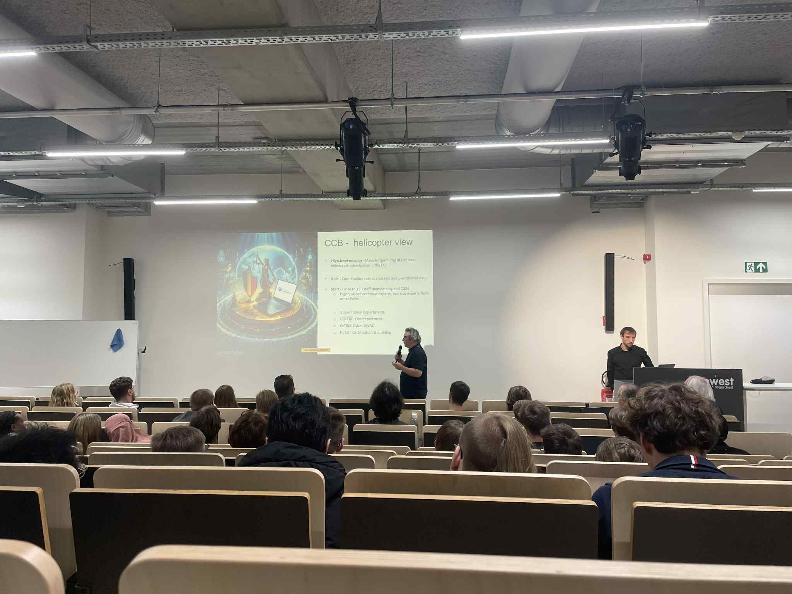
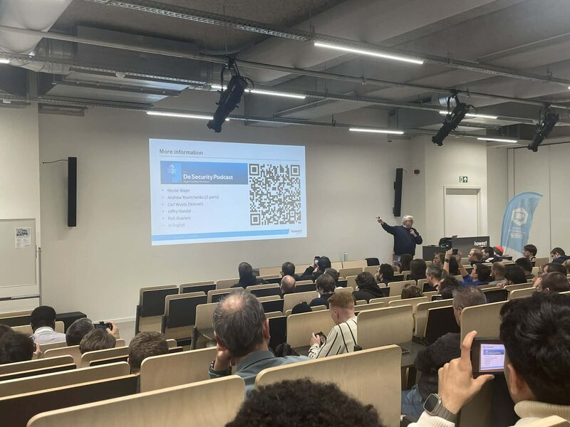
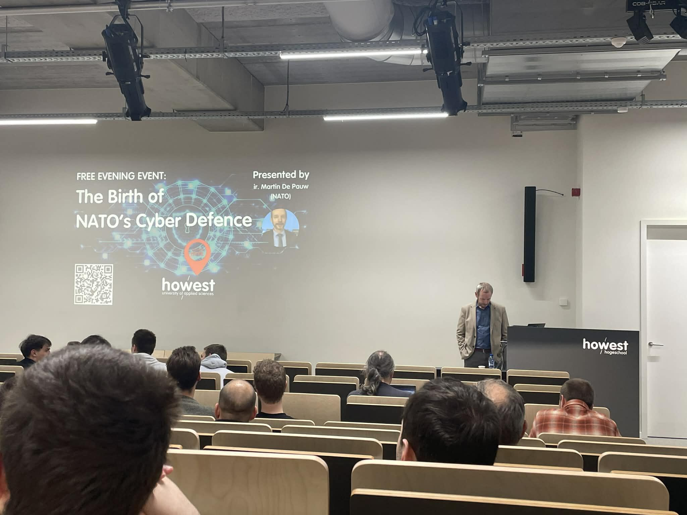
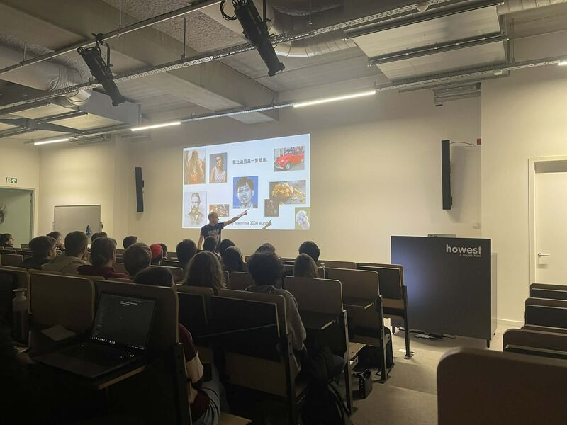
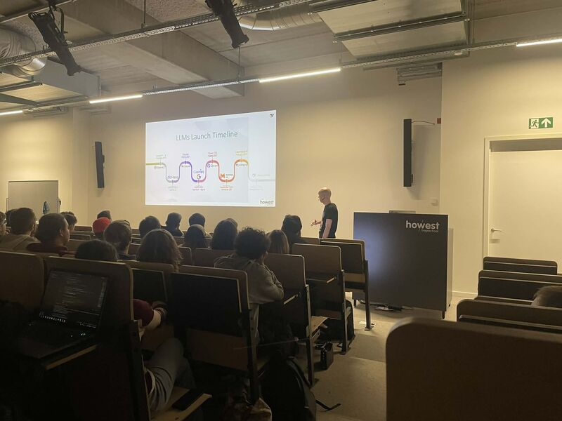

Vier Tech & Meet‑sessies die mijn kijk op cybersecurity en AI verbreed hebben

Tijdens deze sessie kreeg ik een diepere kijk op hoe organisaties cyberdreigingen kunnen omzetten in bruikbare intelligence. Sprekers Sandro Manzo en Niels Desloover van het CCB deelden concrete voorbeelden zoals BePhish en Spear Warning, en toonden hoe samenwerking en vroegtijdige detectie een enorm verschil maken.
Wat me vooral is bijgebleven, is hoe toegankelijk ze een complex onderwerp maakten. Threat Intelligence klinkt vaak zwaar en technisch, maar hier werd het helder, praktisch en relevant gebracht.

Deze sessie ging over de noodzaak van IPv6 en hoe je vandaag al kan starten met een dual‑stack setup. Nico Declerck bracht het onderwerp met humor, anekdotes en zelfs enkele Brugse weetjes, waardoor een technisch thema verrassend luchtig en boeiend werd.
Ik leerde vooral hoe groot de impact van IPv6 wordt op toekomstige netwerken, en waarom organisaties die overstap niet langer mogen uitstellen.

Deze talk door Martin De Pauw gaf een unieke blik achter de schermen van hoe NATO cyber evolueerde van een nevenonderwerp naar een volwaardig domein van defensie. Sinds 2016 wordt cyberspace officieel gezien als een operationeel domein naast land, zee en lucht.
Wat me vooral opviel: technologie evolueert snel, maar risico’s evolueren even snel. Cyberresilience is geen luxe meer, maar een absolute noodzaak.


Deze sessie ging over DeepSeek, een open‑source AI‑model uit China dat veel aandacht krijgt als alternatief voor GPT‑4 en Claude. De focus ligt op transparantie, multimodale mogelijkheden en sterke code‑generatie.
Wat ik interessant vond, is hoe open‑source AI steeds meer een rol speelt in de wereldwijde AI‑race. Het gaat niet alleen om technologie, maar ook om vertrouwen en wie de controle heeft over de toekomst van AI.